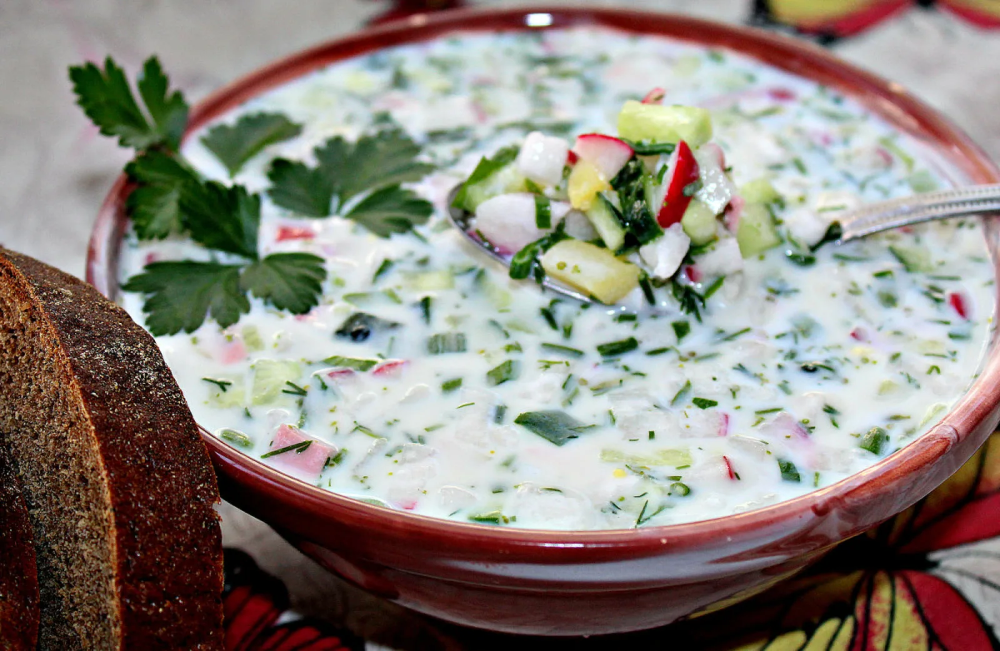
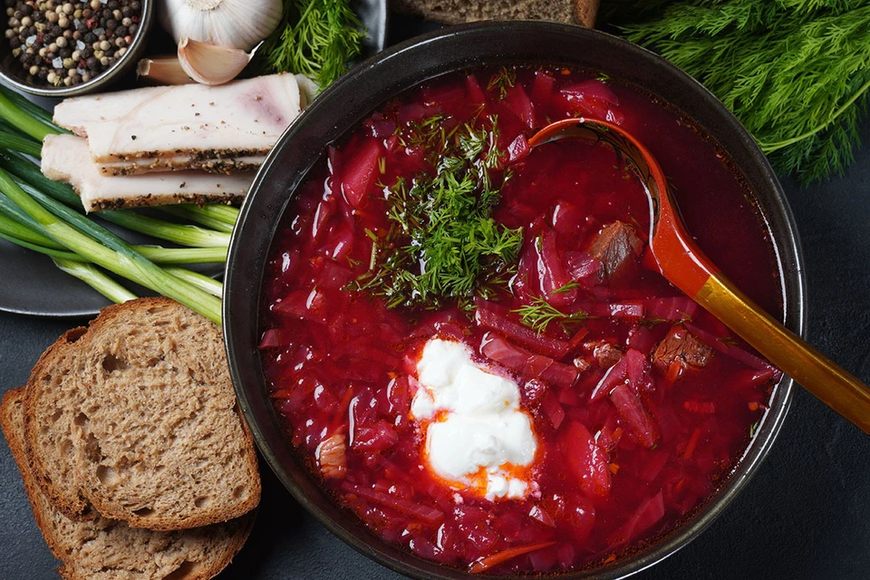

СОЛЯНКА
Соля́нка — старинное русское национальное суповое блюдо, многокомпонентный заправочный суп густой консистенции с ярко выраженным ароматом и характерным острым кисло-солёным насыщенным вкусом.
Первое блюдо, солянку-суп, в кулинарной литературе обычно уточняют как «жидкая солянка», а второе, закусочное или основное мясное или рыбное блюдо из тушёных овощей или квашеной капусты в свою очередь конкретизируют как «солянка на сковороде». Специалисты сходятся во мнении, что сначала, по разным данным в XV или XVII веке , в крестьянской среде появилось тушёное овощное блюдо или густая похлёбка с мясом, капустой, луком и огурцом. По мнению В. В. Похлёбкина, с изобретением водки солянка выступала ей «блюдом-противовесом» и именовалась также похмелкой. По мнению Н. И. Ковалёва и В. В. Усова, селянкой в противовес городским жидким супам называли сельскую еду собственного приготовления приезжавшие в город рыбаки. Со временем кисло-солёно-острая основа похлёбки значительно усилилась за счёт приправ (маслин, каперсов, лимона, хлебного кваса, солёных или маринованных грибов). В своём современном виде суп солянка появился сначала в городских трактирах, а потом и на страницах кулинарных книг только в XIX веке.
Рецепт
Для приготовления данного продукта понадобятся эти продукты:
- Грудинка копчёная - 250 г.
- Колбаса сырокопченая - 150 г.
- Морковь - 150 г.
- Лук репчатый - 50 г.
- артофель - 200 г.
- Огурцы солёные - 200 г.
- Растительное масло - 20 мл.
- Томатная паста - 50 г.
- Лавровый лист - 1 шт.
- Соль - 0,5 ст. ложки (по вкусу)
- Сахар (по желанию) - 0,5 - 1 ч. ложка (по вкусу)
- Маслины - 100 г. (по вкусу)
- Укроп - 1 пучок (по вкусу)
- Лимон - по вкусу
- Сметана - по вкусу
- Шаг 1
- Подготовьте указанные продукты. Вскипятить в кастрюле 2,5 л воды. Почистить, помыть и нарезать картофель кубиками. Лук репчатый почистить, помыть и нарезать кубиками.
- Шаг 2
- В кипящую воду выложить картофель и лук. Варить на небольшом огне под крышкой 15 минут. Тем временем нарезать кубиками колбасу. Нарезать кубиками грудинку. Нарезать кубиками огурцы. Помыть и натереть на крупной терке морковь.
- Шаг 3
- Разогреть сковороду, налить растительное масло. Выложить морковь. Тушить на среднем огне, помешивая, 2-3 минуты. Затем выложить копчености. Обжарить, помешивая, 2-3 минуты.Затем добавить томат-пасту. Перемешать и долить воды ( взять из кастрюли 0,5 стакана), посолить, поперчить, по желанию добавить сахар.Выложить огурцы. Перемешать. Тушить на самом маленьком огне 5-7 минут.
- Шаг 4
- Когда картофель будет готов, влить томатную заправку и перемешать. Добавить лавровый лист. Варить солянку с копченостями на самом маленьком огне 5-7 минут.
- Шаг 5
- Солянка с копченостями готова. Снять с огня и дать настояться 10-20 минут. Помыть и мелко нарезать укроп, выложить в кастрюлю. Налить в тарелку суп, добавить маслины, ломтик лимона и сметану по вкусу. Приятного аппетита!
——————

ОКРОШКА
Окро́шка — традиционный холодный суп русской кухни, который готовят в весенне-летний период. Традиционными компонентами окрошки являются хлебный (ржаной, ячменный) квас,свежие огурцы, укроп, растёртый с солью зелёный лук, столовая горчица, крутое яйцо и сметана. Ингредиенты окрошки измельчают, крошат, что отражено в названии супа. В переносном смысле слово «окрошка» употребляется в значении «смесь, смешение разнородных понятий и предметов».
Окрошка произошла от примитивных крестьянских кушаний: редьки с луком и квасом, тюри из кваса, лука и сухарей, постепенно к ним стали добавлять другие продукты: огурцы, репу, картофель, яйца, мясо, грибы. Вплоть до начала XIX века окрошку подавали не как первое блюдо, а как закуску: отдельно нарезанные продукты и в специальных кувшинах заправленный квас. Различные овощи и кислый квас в составе окрошки являются хорошими возбудителями аппетита. В. А. Лёвшин в своём труде «Русская поварня» 1816 года определил мясную окрошку в холодные блюда первой подачи и рекомендовал использовать для неё остатки «жареного мяса разного: четвероногих, птиц домовых и диких». Лучше всего для окрошки,по его мнению, подходит индейка, тетерев и поросёнок. Обобранное с костей мясо требовалось мелко покрошить с луком, солёными и свежими огурцами и мякотью солёной сливы, перемешать, «стоптать ложкою» и залить огуречным или сливовым рассолом с уксусом, а когда настоится, при подаче развести квасом. Согласно рецепту В. А. Лёвшина из раздела «Постный стол», рыбную окрошку готовили из остатков разных жареных рыб с отваренной солёной осетриной или белужиной, отварной свёклой и солёными огурцами и приправляли хреном, перцем, маслом и уксусом.
Рецепт
Для приготовления данного продукта понадобятся эти продукты:
- квас для окрошки хлебный 1.5л.
- мясо отварное (говядина) 300г.
- огурцы 3-4 шт.
- картофель 4 шт.
- яйца 4 шт.
- лук зелёный 10-15г.
- зелень укропа 10г.
- зелень петрушки 10г.
- сметана 2 стакана
- соль (по вкусу) 0.5ч. ложки
- сахар (по вкусу) 0.25 ч. ложки
- горчица (соус) 0.5 ч. ложки
- Шаг 1
- Подготовить продукты. Картофель с яйцами (яйца можно варить отдельно, это по желанию) сложить в кастрюлю, залить холодной водой и поставить на средний огонь. Довести до кипения, уменьшить огонь и варить 8-10 минут. Вынуть яйца, переложить в холодную воду, а картофель продолжить варить до мягкости, еще минут 10.
- Шаг 2
- Пока варятся яйца и картофель, нарезать отварное мясо кубиками. Укроп мелко порубить. Петрушку также мелко порубить. Огурцы порезать мелкими кубиками. Зеленый лук мелко нарезать.
- Шаг 3
- Нарезанный зеленый лук растереть с небольшим количеством соли, до тех пор, пока не появится сок. Яйца почистить и порезать кубиками. Готовый картофель переложить в холодную воду на пару минут, а затем достать из воды, почистить и порезать кубиками
- Шаг 4
- Все нарезанные ингредиенты, кроме петрушки и укропа, соединить в большой кастрюле или миске. (При желании можно добавить в окрошку нарезанный редис.)Заправить сметаной и хорошо перемешать.
- Шаг 5
- Залить квасом. Добавить укроп, петрушку, сахар, горчицу, посолить и перемешать. Для любителей кисленького можно подать окрошку с долькой лимона.
——————

БОРЩ
Борщ — горячий заправочный суп на основе свёклы, которая придаёт ему характерный красный цвет.В словаре В. И. Даля — род щей, похлёбка из квашеной свёклы, на говядине и свинине, или со свиным салом.
Борщ готовят из картофеля (со второй половины XIX века), капусты, моркови, лука, петрушки, укропа и, обязательно, — свёклы, благодаря которому борщ становится тёмно-красным (свекольным). Красный борщ, как правило, варят на мясокостном бульоне, хотя исторически он был простой пищей крестьян, и мясо добавляли в блюдо только на праздники, в будни же — добавляли толчёное сало с чесноком и луком.При подаче борщ, как правило, заправляется сметаной, исключая некоторые разновидности, например в одесской кухне.Также подают свежий, как правило ржаной хлеб, или пампушки с чесночным соусом.
Рецепт
Для приготовления данного продукта понадобятся эти продукты:
- Говядина - 500 г.
- Картофель - 500 г.
- Капуста белокочанная - 500 г.
- Свекла - 300 г.
- Морковь - 300 г.
- Лук репчатый - 2 шт.
- Томат-паста - 2 ст. ложки
- Чернослив - 5 шт.
- Зелень петрушки - 1 пучок
- Соль - 0,5-1 ст. ложка (по вкусу)
- Масло растительное - 2 ст. ложки
- Вода - 2 л.
- Сметана (для подачи) - по вкусу
- Шаг 1
-
Подготавливают все необходимые продукты. Если чернослив сухой, заливают его кипятком на 10-15 минут.Мясо нарезают небольшими кусочками.Выкладывают мясо в кастрюлю, заливают холодной водой. Доводят до кипения, снимают пену и варят мясо 1,5 часа на маленьком огне, под крышкой.Картофель очищают и нарезают крупными кусками.Свеклу очищают, нарезают соломкой. Обычно свёклу тушат в сковороде с добавлением лимонного сока или уксуса - можно сделать именно так. Но в этом рецепте свёкла добавляется в бульон в сыром виде и варится вместе с картошкой и капустой.
- Шаг 2
-
Капусту шинкуют соломкой. Лук чистят и мелко нарезают. Морковь чистят и натирают на крупной терке. Чернослив очищают от косточек, мелко нарезают.
Сковороду нагревают, наливают растительное масло. В горячее масло выкладывают лук и морковь, обжаривают овощи, помешивая, 3-4 минуты на среднем огне.
Добавляют томатную пасту, перемешивают и обжаривают овощи с томатом ещё 1 минуту.
- Шаг 3
-
Сковороду нагревают, наливают растительное масло. В горячее масло выкладывают лук и морковь, обжаривают овощи, помешивая, 3-4 минуты на среднем огне.
Добавляют томатную пасту, перемешивают и обжаривают овощи с томатом ещё 1 минуту.
- Шаг 4
-
В мясной бульон добавляют картофель, свёклу, капусту, обжаренные лук и морковь. Добавляют чернослив, соль и варят борщ с черносливом до готовности картофеля, 20-25 минут. Зелень моют и мелко режут.
- Шаг 5
- Готовый борщ с черносливом разливают по тарелкам, посыпают измельченной зеленью петрушки. Подают борщ со сметаной. Приятного аппетита!